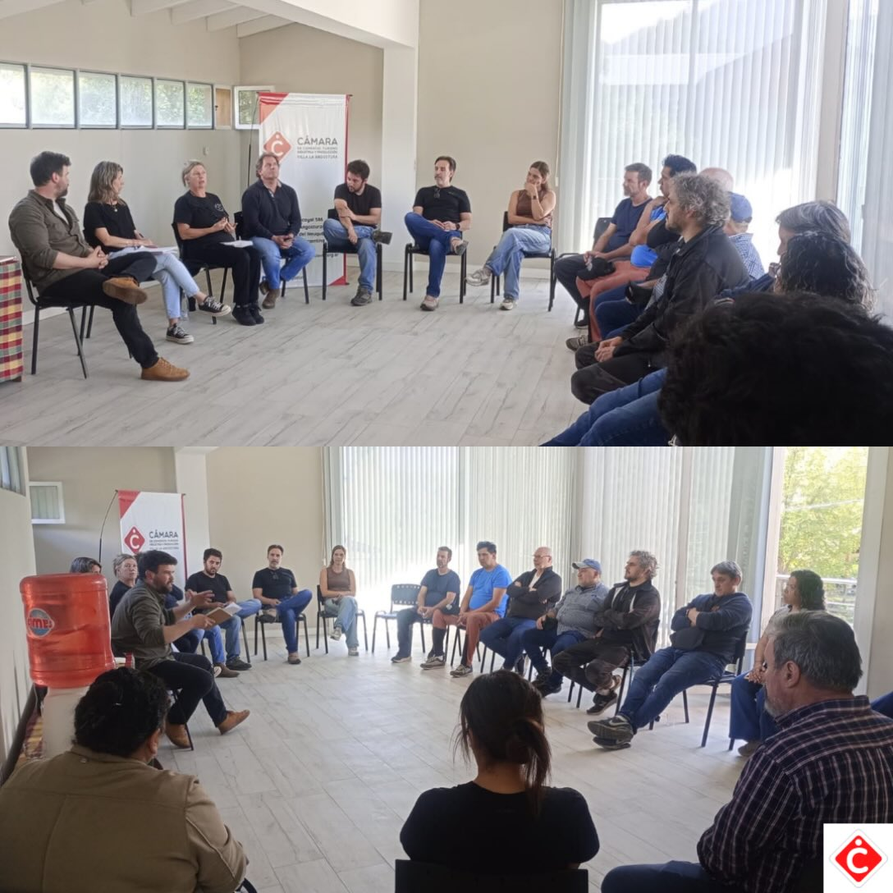

Primer encuentro con comerciantes y prestadores para pensar propuestas en conjunto
En un contexto difícil y de mucha incertidumbre, la Cámara convocó a comerciantes, productores y prestadores de servicios a un mediodía de charla y diagnóstico, para sumar esfuerzos en propuestas que beneficien al turismo y al comercio del pueblo.

Los disparadores fueron las propuestas y actividades turísticas, la infraestructura, los beneficios impositivos, los alquileres y la sostenibilidad de la actividad comercial, y el contexto general de baja del consumo. El encuentro se realizó el lunes 26 de octubre y se va a repetir próximamente, sumando más actores con ganas de involucrarse. Agradecemos la participación, el respeto y la predisposición para empujar juntos la actividad. Si te interesa participar de la próxima reunión, escribinos a secretariaccvla@gmail.com o por nuestras redes.
Fuente: Instagram @camaravla, 28/10/2026
Compartí esta nota: https://camaravla.org.ar/noticias/2026-10-encuentro-comerciantes